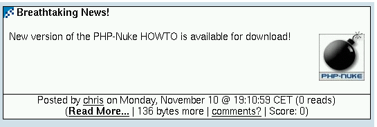

14.5. Modifying the PHP-Nuke theme index
The themeindex() function displays and formats the News articles. In its standard form, it will attribute a news article to the administrator, rather than the registered user who submitted it. It would be nice if the “Posted by” string pointed to the real author, not the administrator who approved and posted the submission (see Figure 14-4).
Figure 14-4. News article: “posted by” does not mean “submitted by”.

News article: “posted by” does not mean “submitted by”.
To give credit, where credit is due, you must change function themeindex() in the file theme.php of your theme, e.g. themes/NukeNews/theme.php. Change the following:
if ("$aid" == "$informant") {
$content = "$thetext$notes\n";
} else {
if($informant != "") {
$content = "<a href=\"modules.php?name=Your_Account
&op=userinfo&username=$informant\">$informant</a> ";
} else {
$content = "$anonymous ";
}
$content .= ""._WRITES." <i>\"$thetext\"</i>$notes\n";
}
$posted = ""._POSTEDBY." ";
$posted .= get_author($aid); |
to:
$content = "$thetext$notesn";
$posted = ""._POSTEDBY." ";
if("$informant" == "") {
$posted .= "$anonymous ";
} else {
$posted .= get_author($informant);
} |
or, if you want to be more flexible, to:
if ($informant == "") {
$informant = "Anonymous";
}else {
$holder = sql_query("SELECT url, femail
FROM ".$user_prefix."_users where uname='$informant'", $dbi);
list($url, $femail) = sql_fetch_row($holder, $dbi);
if ($url != "") {
$informant = "<a href="$url">$aid</a>";
} elseif ($femail != "") {
$informant = "<a href="mailto:$femail">$informant</a>";
} else {
$informant = "<a href="modules.php?name=Your_Account
&op=userinfo&uname=$informant">$aid</a>";
}
}
echo "$informant"; |
If you apply the latter solution, you should also declare $user_prefix and $dbi to be global variables in themeindex().
 | Every theme is different! | |
|---|---|---|
Not all themes are like the NukeNews theme. Some may format the "Posted by" string in a separate function. The important thing to remember is that you must find the line
in the themeindex() function. The name of the “informant” is echoed immediately after that line. That's the place to include the above pieces of code (perhaps replacing some function call). |
See submit news problem and Need to change some links for further discussion of this topic.
The themeindex() function in theme.php is also the place where the “number of reads” is printed after the “posted by” part (see How to remove the number of reads in News). Thus, if you want to remove the number of reads in the News module and your theme is NukeNews, for example, you have to edit themes/NukeNews/theme.php with a decent text editor (see also Chapter 11), find the line
$posted .= " "._ON." $time $timezone ($counter "._READS.")"; |
in the themeindex() function and change it to:
$posted .= " "._ON." $time $timezone "; |